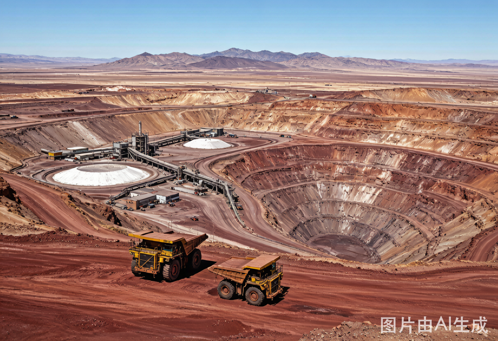
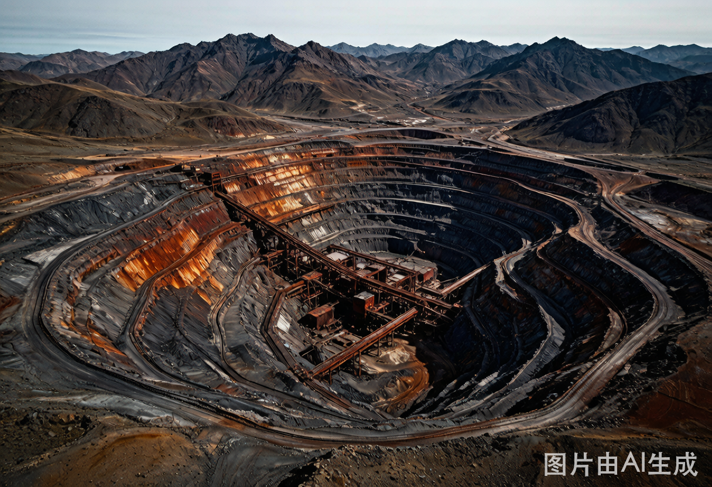
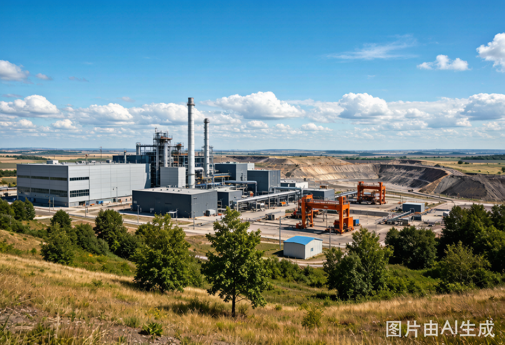
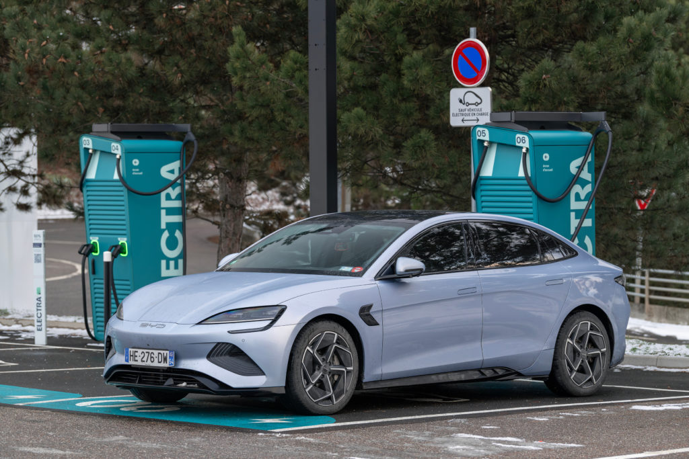

Daily Metals Mining Digest 每日金属矿业 · 供需信号
跟踪金、银、铜矿业的供给与需求信号。每日 07:00 北京时间自动产出，访谈覆盖 72 小时窗口；新闻同步覆盖英文信源（Mining.com / 公司新闻稿）与中文信源（Mysteel / SMM）。每篇日报同步输出结构化 JSON，支持跨日查询与周度趋势分析。
Search Results 输入关键词搜索历史日报和周报
Featured Reports 最近 7 日 · 2026-07-03 → 2026-07-09
View All
2026-07-09 矿业 Broadcast & 供需新闻
铜供给信号密集爆发：Ivanhoe Kamoa-Kakula Q2 产铜 64,328 吨，H2 采矿率 +30% 至 8.5Mtpa（2028年目标 50 万吨/年）；BHP Escondida $150 亿扩建获智利批准；Olympic Dam 冶炼扩建进入 FEED 阶段。勘探端 NGEx Lunahuasi Jupiter 带钻获 19m @25.84% CuEq。金需求：中国央行连续 20 月增持黄金，6 月购入 48 万盎司创 2023 年以来最高；Rule Symposium 定性黄金从"对冲"变为"抵押品"。银供需：印度限进口致溢价飙至 $6.5/oz，Aya Q2 银产量 +61%。

2026-07-08 矿业 Broadcast & 供需新闻
铜供给信号本期最为密集和重大：Bloomberg 长篇调查揭露 Codelco 结构性危机——$250 亿债务、28 年最低产量（约 130 万吨）、产量虚报丑闻，新任董事长暗示放弃 170 万吨历史目标。紫金天风数据验证矿端紧缺向冶炼端传导（TC -$130/t，零单利润 <500 元/吨），国内铜库存加速去化。Solidcore 签约阿曼 Khabiyat 铜金项目，中东铜矿勘探新区。X 原帖：中国黄金 ETF 超越股票基金（金需求里程碑）、AI 数据中心白银需求、美国矿业工程人才断层（年毕业 162 人 vs 中国 3,000）、Troilus Gold 矿坑内高品位见矿 164m @0.95g/t AuEq。Part 1 本期无新访谈。

2026-07-07 矿业 Broadcast & 供需新闻
铜供给信号贯穿全期：Mining Stock Daily 早间简报覆盖 KGHM $85.5 亿 Strategy 2055+（目标 73 万吨铜 + 1,290 吨银/年）和 BHP Cerro Colorado $15 亿重启环评。金银勘探密集：Dakota Gold Richmond Hill PFS 钻探外扩抓 11.36g/t 金，Argenta Silver El Quevar 外扩 120 米仍见 bonanza 级银（446g/t/28m），King Copper Discovery 获秘鲁 36,010 米钻探许可。Mysteel 数据：国内铜库存周降 1.75 万吨，6 月产量环比同比双降。Part 2 通过 Playwright + Chrome 搜索全部种子账号，未筛出新增合格原帖。

2026-07-06 矿业 Broadcast & 供需新闻
铜供给信号高度集中：美国 232 铜关税调查报告（预期 2027 年起对进口精炼铜加征 15% 关税），全球铜精矿 TC 跌至历史极低值，智利 AMSA 率先放弃固定加工费模式。全球铜显性库存周度降 1.7 万吨。白银有色完成境外铜金矿收购（新增铜储量 65 万吨、金 12.38 吨）。沙特 As Safra 首钻确认大型铜矿化系统。Part 2：KatusaResearch 发布白银 SLV 投资需求信号。

2026-07-05 矿业 Broadcast & 供需新闻
本页以金、银、铜矿业供需为主线，不再把 CSV 名单当作硬过滤器。窗口内重点是 Adani 铜冶炼品牌进入 LME 交割体系，以及 Zimbabwe 高金价下黄金勘探与化验需求升温。

2026-07-04 矿业 Broadcast & 供需新闻
供给管线推进最集中：KGHM 铜银投资计划、Red Chris 扩建承诺、Faraday Copper 资产组合扩大，以及 Antofagasta 在智利铜项目的许可推进。

2026-07-03 矿业 Broadcast & 供需新闻
铜供给恢复与黄金运营风险并存：BHP 寻求重启 Cerro Colorado，Hudbay 提升 Constancia 处理能力，Agnico Eagle 因 Barnat open pit 岩体移动提示黄金产量短期受扰。

2026-07-02 矿业 Broadcast & 供需新闻
黄金投资需求与矿业资产重配是主线：黄金受利率路径预期影响反弹，同时 South32 出售铝业务后把资本焦点转向铜、锌、银、铅等资产组合。

2026-07-01 矿业 Broadcast & 供需新闻
铜与黄金供给管线并行：Koryx Copper 的 Namibia Haib 钻探推进铜资源转化，Fortuna 的 Senegal Diamba Sud 可研强化黄金供给管线。

2026-06-30 矿业 Broadcast & 供需新闻
Bunker Hill Mining 在 Idaho mill 开始处理矿石并向设计处理能力爬坡，对应北美白银副产品与铅锌矿山供给恢复。